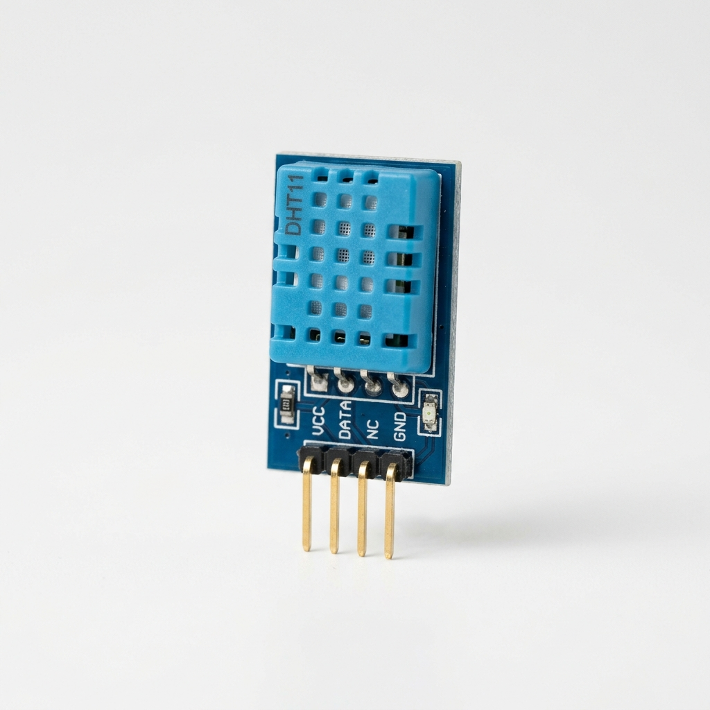

DHT11
Categoria: Temperatura e Umidade
Conceito
O DHT11 é um sensor básico, de custo ultrabaixo, utilizado para medir a temperatura e a umidade do ar ao seu redor e fornecer uma saída digital através de um único pino de dados.
Princípio de Funcionamento
O sensor possui um elemento capacitivo sensível à umidade e um termistor NTC para medir a temperatura. Um microcontrolador interno de 8 bits processa essas grandezas analógicas e transmite os dados já digitalizados, dispensando o uso do conversor ADC do Arduíno.
Principais Especificações Técnicas
- Tensão de operação: 3V a 5.5V DC
- Faixa de medição (Umidade): 20% a 90% UR
- Precisão (Umidade): ±5% UR
- Faixa de medição (Temperatura): 0ºC a 50ºC
- Precisão (Temperatura): ±2ºC
Aplicações Industriais ou IoT
Monitoramento ambiental em salas limpas, armazéns, galpões logísticos e controle de climatização em estufas agrícolas automatizadas.
Exemplo em um Projeto
Estufa Inteligente: O DHT11 monitora as condições internas da estufa. Se a temperatura subir além do ideal, o microcontrolador aciona os exaustores; se a umidade baixar, liga o sistema de irrigação por gotejamento.